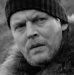
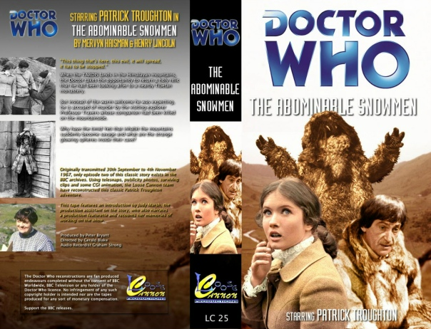
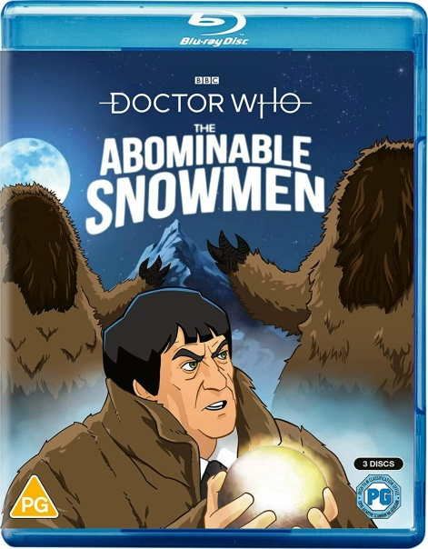
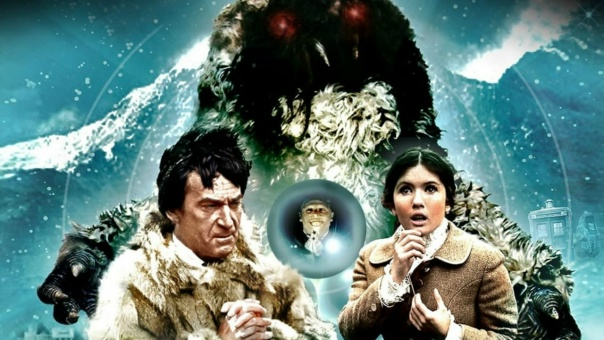
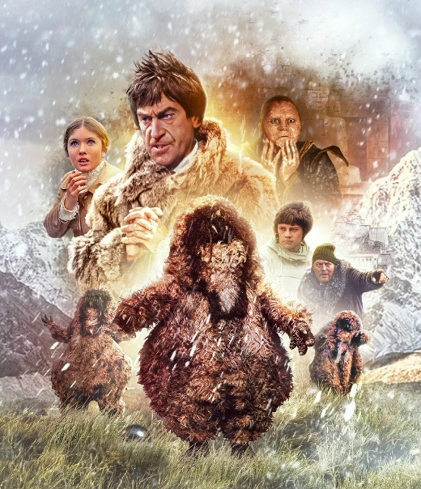

Эра Второго Доктора (5 сезон)
<<< НАЗАД ||| 2. Снежные люди ||| ДАЛЬШЕ >>>
+ Реконструкция (эпизоды 1, 3–6) Субтитры: Русские и Английские |  |
|---|---|
+ Фанатская CGI анимация (эпизоды 1, 3–6) WhoRecons Субтитры: Отсутствуют | |
+ Черно-белая анимация в соотношении сторон 4:3 (эпизоды 1, 3–6) Субтитры: Русские и Английские | |
Субтитры: Русские и Английские | |
эп.1: Отрывок- Начальные сцены (Animatronics87) | эп.1: Отрывок- Первые 10 минут (Marcus Dilloni) |
эп.1: Josh Snares | эп.3: Josh Snares |
эп.4: Josh Snares
30 сентября - 4 ноября 1967
6 эпизодов по 25 мин.
| Изначально все эпизоды утеряны * 2-й эпизод найден в 1982 г. - 16mm t/r * На оставшиеся (1, 3-6) эпизоды имеется реконструкция * Имеется официальная цветная анимация на все эпизоды 2022 |
|---|
 |  помощник |
«Снежные люди» — заснеженные Гималаи хранят древнюю тайну: в монастыре, затерянном среди льдов, монахи поклоняются загадочным йети, не ведая, что те — часть чужого, холодного плана, а Второй Доктор, Джейми и Виктория, пробиваясь сквозь вьюгу и недоверие, пытаются разгадать, где кончается легенда и начинается угроза, способная сковать весь мир; тон истории — пронизанный ледяным ветром и тишиной гор, где каждый след может вести к спасению — или к гибели.
 VHS - 1991 |  DVD (2эп.) - 1 ноября 2004 |
|---|---|
 LC recon - апрель 2006 |  Blu-ray - 5 сентября 2022 * Версия в нашей группе |




